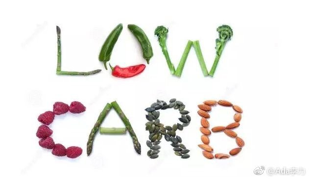

担心自己讲错原理，网上搜了下生化过程：高碳水的精米白面 -> 胰岛素大量分泌 -> 色氨酸大量产生 -> 可助眠的褪黑素大量产生，所以犯困。褪黑素大家一定不陌生，就是天天打广告的脑白金里的主要成分。
@Ada李力:
最近学习饮食方面的知识，感觉目前有个潮流是把碳水视为万恶之源了。这在以碳水做为主要能量来源的中国，很难想象，没有米面的饭菜，简直不能称为一顿饭。
看过那些低碳的科普文章，觉得有道理，至少说服我了。接下来肯定要试一试。
我也跟姣姣分享了自己的新知识，姣姣给我一个反馈。她说自己发现只要中午吃完一大碗面，下午自习肯定要睡一觉。我说这是高碳水导致的餐后血糖飙升，这时候人确实容易迷糊和犯困。姣姣说她发现这一点后，现在中午就不吃面了，改为菜肉米饭这样的组合。
我到这个年龄才开始审视自己的习惯饮食是否合理，而姣姣初中就已经学会调整，为小朋友点赞。
而且，我也跟姣姣讲生酮饮食的原理和做法时，姣姣说：“妈妈，这个不适合你，你不喜欢吃肉”。我之前觉得自己不能尝试生酮是担心自己断不了碳水，其实姣姣说的才是根本原因。恍惚觉得，最了解自己的，还是闺女哈。
看过那些低碳的科普文章，觉得有道理，至少说服我了。接下来肯定要试一试。
我也跟姣姣分享了自己的新知识，姣姣给我一个反馈。她说自己发现只要中午吃完一大碗面，下午自习肯定要睡一觉。我说这是高碳水导致的餐后血糖飙升，这时候人确实容易迷糊和犯困。姣姣说她发现这一点后，现在中午就不吃面了，改为菜肉米饭这样的组合。
我到这个年龄才开始审视自己的习惯饮食是否合理，而姣姣初中就已经学会调整，为小朋友点赞。
而且，我也跟姣姣讲生酮饮食的原理和做法时，姣姣说：“妈妈，这个不适合你，你不喜欢吃肉”。我之前觉得自己不能尝试生酮是担心自己断不了碳水，其实姣姣说的才是根本原因。恍惚觉得，最了解自己的，还是闺女哈。
- 